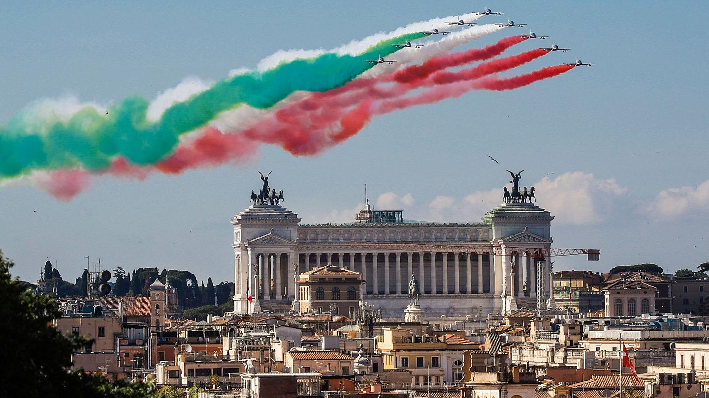

The Stories from the Gondolas
Posted 22/01/2018 by Aditya Singh

Italy’s great food, beautiful countryside, fabulous wine, and long history make it an excellent country to visit. I fall in love with the country every time I backpack Italy. The vineyards in Tuscany, the history of Florence, the ancient streets in Rome, the laid back nature of Southern Italy, the gorgeous Cinque Terre, and the romantic canals in Venice, all make the country irresistible. Italy travel leaves no visitor underwhelmed and, with so much to do and see, it would take a lifetime to complete. But that doesn’t mean you can’t see a lot in your time there, whether it’s a short two-week vacation or a longer backpacking trip! Italy is best seen slowly so don’t rush it in one visit and try to do too much. Relax, take in the scenery, and enjoy a latte. This Italy travel guide combines years of experience to help you plan an even better trip to Italy!

Italy is known for its cuisine – fresh pasta, bread, tomatoes, pizza, gelato, and wine. It’s easy to have a great (and expensive) meal anywhere in Italy, but it’s also easy to eat for less than 15 EUR (17 USD) a day if you make the effort. Most restaurant meals with wine will cost around 25 EUR (30 USD) per person. In tourist hot spots, add about 10 EUR (12 USD) to that. Quick eats like pizza by the slice, paninis, and light snacks will cost between 2-7 EUR. Fast food (i.e. McDonalds) will cost 10 EUR (11 USD) for a value meal. At most restaurants, add 3 EUR (4 USD) for the “coperto” (sit down fee) that covers service and the bread at the table. If you’re feeling ambitious and staying somewhere with a kitchen, consider cooking your own food for between 50-70 EUR (57-80 USD) per week. If you find a discount grocer like Eurospin, In’s Mercato, LD Market, Lidl or Penny Market, you’ll pay less.